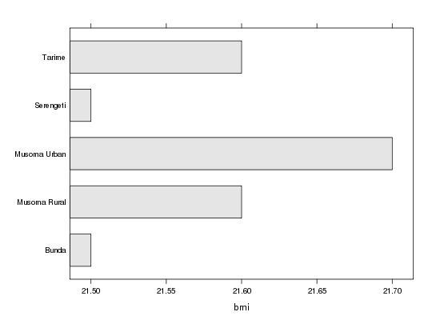

getLayer(var, iso3 = "SSA", by = NULL, ids = NULL, collapse = TRUE, as.class = "data.table")
category("poverty") to search for valid variable codes).iso to view all available codes.collapse=FALSE) or
summarize by (if collapse=TRUE).by variables. If FALSE always return
all pixel values (useful for plotting and to convert to spatial formats).as.class="list" returns a list with variable metadata.var indicators aggregated by
by domains
Workhorse method to query, subset and/or aggregate HarvestChoice layers.
This method may also be used to summarize classified variables along continuous
variables, e.g. getLayer(var="AEZ16_CLAS", by="bmi").
It does so by returning the dominant class of a classified variable within each by
class, and by splitting any continuous variable passed to by using default value
breaks. The dominant class of a variable var is defined as dominant(var).
Variables may also be summarized over custom areas (passed as an integer array of
gridcell IDs). Note that calling getLayer is equivalent to using the
convenience method hcapi with the same arguments.
API call: mean body mass index and maize yield across districts in Tanzania
curl http://hcapi.harvestchoice.org/ocpu/library/hcapi3/R/hcapi/json \
-d '{"var":["AEZ8_CLAS","bana_h"], "iso3":"CIV", "by":["ADM1_NAME_ALT","ELEVATION"]}' \
-X POST -H 'Content-Type:application/json'
# Mean body mass index and maize yield across districts in Tanzania x <- getLayer(c("bmi", "maiz_y"), iso3="TZA", by=c("ADM1_NAME_ALT", "ADM2_NAME_ALT")) xISO3 ADM0_NAME ADM1_NAME_ALT ADM2_NAME_ALT bmi maiz_y 1: TZA United Republic of Tanzania Arusha Arumeru 21.2 2767 2: TZA United Republic of Tanzania Arusha Arusha 22.2 NaN 3: TZA United Republic of Tanzania Arusha Karatu 21.2 2074 4: TZA United Republic of Tanzania Arusha Monduli 21.2 1816 5: TZA United Republic of Tanzania Arusha Ngorongoro 21.2 1159 --- 124: TZA United Republic of Tanzania Unguja North North B 21.7 NaN 125: TZA United Republic of Tanzania Unguja South Central 22.9 NaN 126: TZA United Republic of Tanzania Unguja South South 23.2 NaN 127: TZA United Republic of Tanzania Unguja Urban West West 23.2 NaN 128: TZA United Republic of Tanzania buffer gridcell buffer gridcell NaN NaN# Plot results for Mara province require(lattice)Loading required package: latticebarchart(ADM2_NAME_ALT~bmi, x[ADM1_NAME_ALT=="Mara"], col="grey90") # The method may be expanded to summarize classified (discrete) variables by continuous # variables. For example the call below returns the dominant agro-ecological zone and # banana harvested area over Ivory Coast's provinces and elevation zones x <- hcapi(c("AEZ8_CLAS", "bana_h"), iso3="CIV", by=c("ADM1_NAME_ALT", "ELEVATION"))
xISO3 ADM0_NAME ADM1_NAME_ALT ELEVATION AEZ8_CLAS bana_h 1: CIV Ivory Coast 18 Montagnes NA Humid 66 2: CIV Ivory Coast 18 Montagnes (3e+02,5e+02] Humid 456 3: CIV Ivory Coast 18 Montagnes (5e+02,9e+02] Sub-Humid 86 4: CIV Ivory Coast 18 Montagnes (9e+02,1e+03] Humid 23 5: CIV Ivory Coast Agneby NA Humid 322 6: CIV Ivory Coast Bafing NA Sub-Humid 0 7: CIV Ivory Coast Bafing (3e+02,5e+02] Sub-Humid 86 8: CIV Ivory Coast Bafing (5e+02,9e+02] Sub-Humid 15 9: CIV Ivory Coast Bas Sassandra NA Humid 874 10: CIV Ivory Coast Bas Sassandra (3e+02,5e+02] Humid 78 11: CIV Ivory Coast Denguele (3e+02,5e+02] Sub-Humid 78 12: CIV Ivory Coast Denguele (5e+02,9e+02] Sub-Humid 4 13: CIV Ivory Coast Fromager NA Humid 287 14: CIV Ivory Coast Fromager (3e+02,5e+02] Humid 8 15: CIV Ivory Coast Haut-sassandra NA Humid 304 16: CIV Ivory Coast Haut-sassandra (3e+02,5e+02] Humid 404 17: CIV Ivory Coast Lacs NA Sub-Humid 236 18: CIV Ivory Coast Lagunes NA Sub-Humid 460 19: CIV Ivory Coast Marahoue NA Humid 318 20: CIV Ivory Coast Marahoue (3e+02,5e+02] Humid 58 21: CIV Ivory Coast Moyen Comoe NA Humid 231 22: CIV Ivory Coast Moyen Comoe (3e+02,5e+02] Humid 6 23: CIV Ivory Coast Moyen-Cavally NA Humid 177 24: CIV Ivory Coast Moyen-Cavally (3e+02,5e+02] Humid 247 25: CIV Ivory Coast N'zi Comoe NA Sub-Humid 428 26: CIV Ivory Coast N'zi Comoe (3e+02,5e+02] Sub-Humid 6 27: CIV Ivory Coast Savanes NA Sub-Humid 3 28: CIV Ivory Coast Savanes (3e+02,5e+02] Sub-Humid 158 29: CIV Ivory Coast Savanes (5e+02,9e+02] Sub-Humid 0 30: CIV Ivory Coast Sud Bandama NA Sub-Humid 457 31: CIV Ivory Coast Sud Bandama (3e+02,5e+02] Humid 13 32: CIV Ivory Coast Sud Comoe NA Humid 299 33: CIV Ivory Coast Vallee Du Bandama NA Sub-Humid 238 34: CIV Ivory Coast Vallee Du Bandama (3e+02,5e+02] Sub-Humid 140 35: CIV Ivory Coast Worodougou NA Sub-Humid 28 36: CIV Ivory Coast Worodougou (3e+02,5e+02] Sub-Humid 258 37: CIV Ivory Coast Worodougou (5e+02,9e+02] Sub-Humid 2 38: CIV Ivory Coast Zanzan NA Sub-Humid 224 39: CIV Ivory Coast Zanzan (3e+02,5e+02] Sub-Humid 200 40: CIV Ivory Coast Zanzan (5e+02,9e+02] Sub-Humid 9 41: CIV Ivory Coast buffer gridcell NA NA 0 ISO3 ADM0_NAME ADM1_NAME_ALT ELEVATION AEZ8_CLAS bana_h